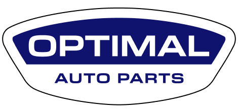

Sales Enquiry
Track your order: (857) 344-0627

Used Engines
Used Transmissions
Brands
Financing
About
Contact
Home
About
Used Engines
Used Transmissions
Brands
Contact Us
Financing
Auto Parts for Kia
Home
Kia
Kia Amanti
Kia Besta
Kia Borrego
Kia Cadenza
Kia Forte
Kia K900
Kia Magentis
Kia Niro
Kia Optima
Kia Rio
Kia Rondo
Kia Sedona
Kia Sephia
Kia Sorento
Kia Soul
Kia Spectra
Kia Sportage
Kia Stinger